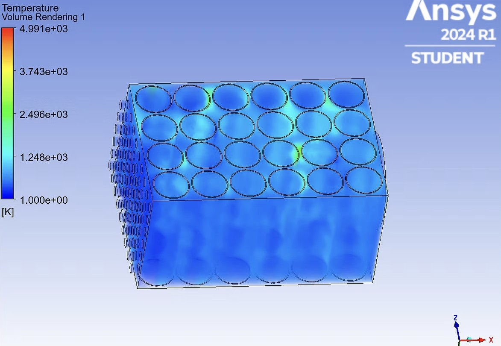

Thermal Analysis of a Li-ion Battery Pack

The 24-cell pack as modelled in ANSYS.

After the transient run: hotspots form between the center cells.
How hot does the middle of a battery pack get? I built a 3D model of a pack of 24 cylindrical Li-ion cells in ANSYS, gave every cell internal heat generation from charging and discharging, cooled the outside by convection, and ran a transient thermal solve on a fine mesh to watch the temperature field develop. The center cells ran hottest while the outer cells shed heat more easily, which is exactly where a pack needs better cooling to stay uniform and avoid thermal runaway.
24 cylindrical cells
3D transient thermal solve
ANSYS